A.1 Shooting the Pictures
I took these pictures around International House with my (ancient) iPhone 11. I used 1x zoom and turned off Live Photos so every shot was processed the same way. To keep the center of projection fixed, I held the phone against my chest and rotated at the waist, which turns the camera roughly about its center without translating it. Consecutive shots overlap by about 50%.
For rectification I used one chessboard photo (chess_a_1) and the left double door in wall_1.
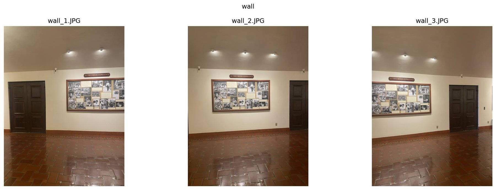
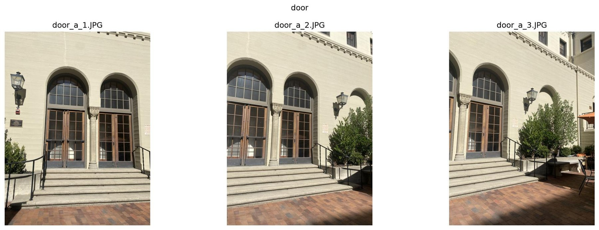
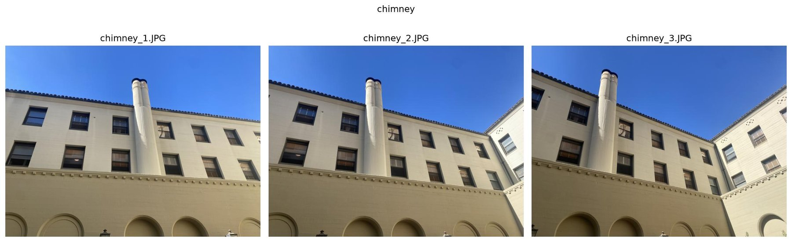
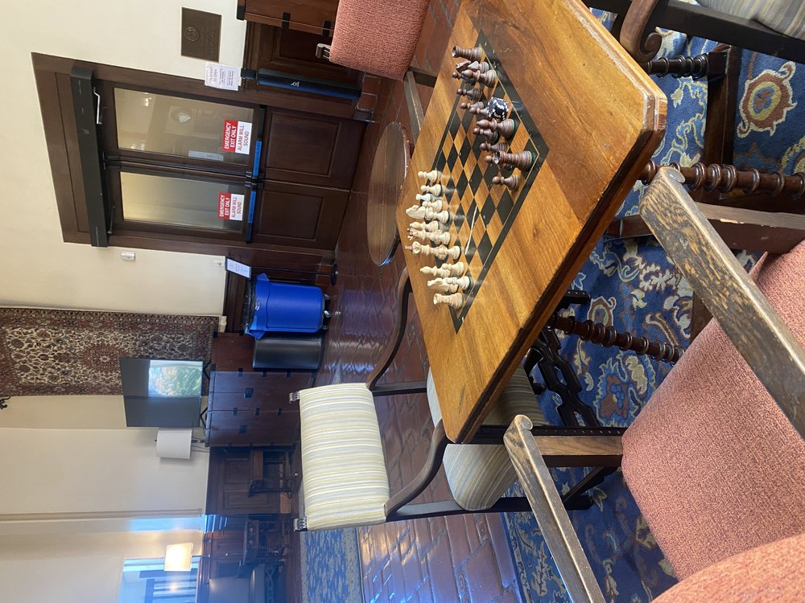
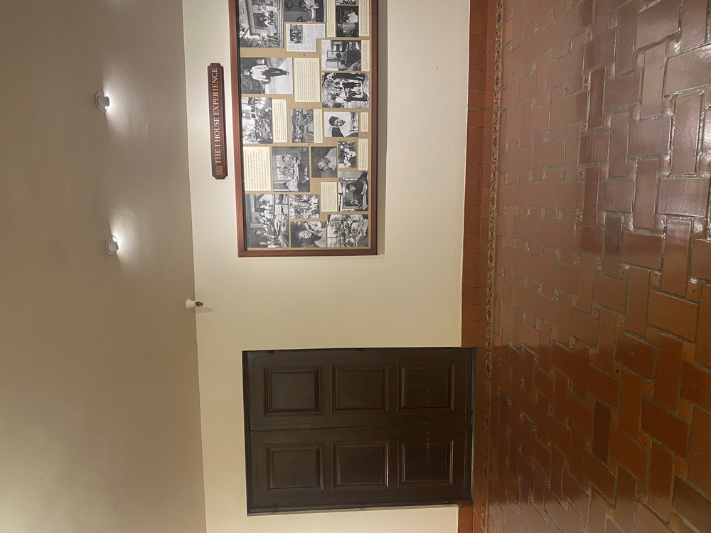
A.2 Recovering Homographies
Implementation: build_homography_system, computeH
def build_homography_system(im1_pts, im2_pts):
"""Build A (2n x 8) and b (2n,) for the unknowns h = [h11, ..., h32], with h33 = 1."""
A, b = [], []
for (x, y), (xp, yp) in zip(im1_pts, im2_pts):
A.append([x, y, 1, 0, 0, 0, -x * xp, -y * xp])
b.append(xp)
A.append([0, 0, 0, x, y, 1, -x * yp, -y * yp])
b.append(yp)
return np.array(A, dtype=np.float64), np.array(b, dtype=np.float64)
def computeH(im1_pts, im2_pts):
"""Least-squares homography mapping im1_pts -> im2_pts."""
assert len(im1_pts) == len(im2_pts) >= 4, 'need at least 4 correspondences'
A, b = build_homography_system(im1_pts, im2_pts)
h, *_ = np.linalg.lstsq(A, b, rcond=None)
return np.append(h, 1.0).reshape(3, 3)Correspondences and recovered H
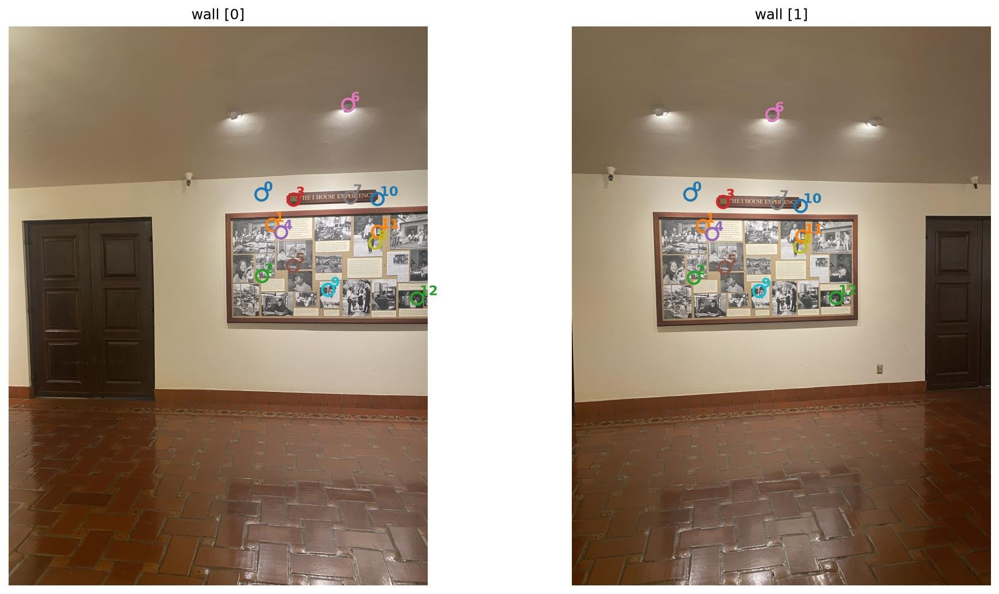
H (wall 0 → 1) 1.4600 0.0497 -644.7803
0.2727 1.3189 -214.5468
3.75e-04 2.33e-05 1.0000
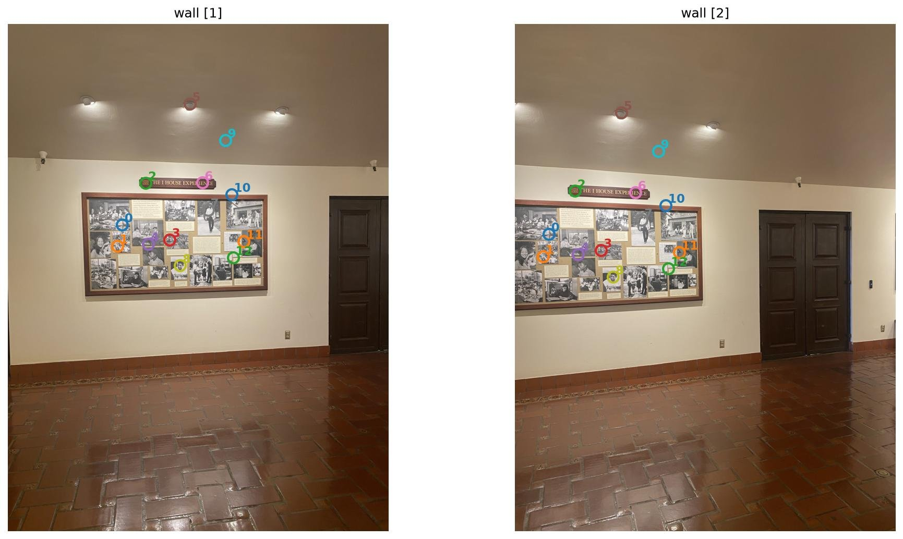
H (wall 1 → 2) 1.1957 0.0037 -322.1163
0.1241 1.0789 -38.7933
1.66e-04 -3.14e-05 1.0000
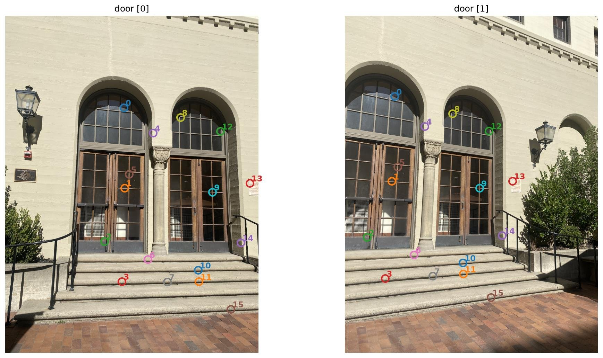
H (door 0 → 1) 1.3474 -0.0478 -461.6639
0.2671 1.2341 -241.8298
2.82e-04 1.21e-05 1.0000
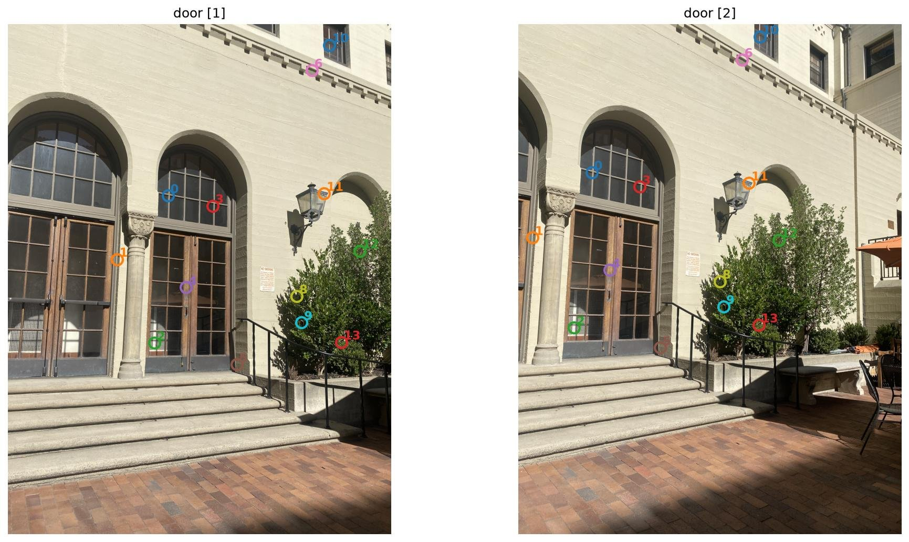
H (door 1 → 2) 1.3217 -0.0114 -393.4752
0.2131 1.2489 -246.4297
2.36e-04 4.84e-05 1.0000
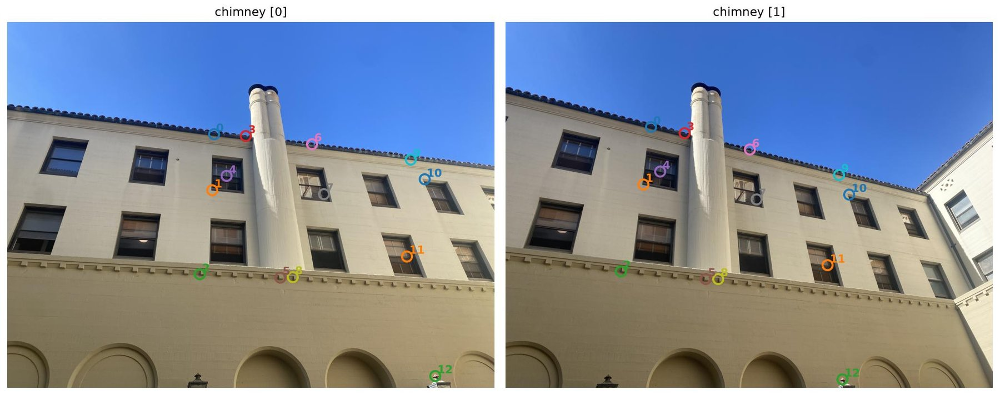
H (chimney 0 → 1) 1.2792 -0.1302 -286.1992
0.2157 1.1336 -178.9205
1.85e-04 -2.61e-05 1.0000
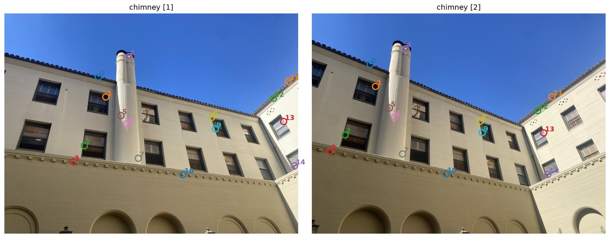
H (chimney 1 → 2) 1.2439 -0.1447 -244.9357
0.2298 1.1283 -208.6242
1.58e-04 -6.54e-06 1.0000
Derivation
$$ \begin{bmatrix} w x' \\ w y' \\ w \end{bmatrix} = \begin{bmatrix} h_{11} & h_{12} & h_{13} \\ h_{21} & h_{22} & h_{23} \\ h_{31} & h_{32} & 1 \end{bmatrix} \begin{bmatrix} x \\ y \\ 1 \end{bmatrix} $$
Since $H$ is only defined up to scale, I fix $h_{33} = 1$, which leaves 8 unknowns.
Multiplying out the matrix gives
$$ w x' = h_{11} x + h_{12} y + h_{13}, \qquad w y' = h_{21} x + h_{22} y + h_{23}, \qquad w = h_{31} x + h_{32} y + 1 $$
Substituting the third equation into the first two:
$$ x' = \frac{h_{11} x + h_{12} y + h_{13}}{h_{31} x + h_{32} y + 1}, \qquad y' = \frac{h_{21} x + h_{22} y + h_{23}}{h_{31} x + h_{32} y + 1} $$
Multiplying both sides by $h_{31} x + h_{32} y + 1$:
$$ x'(h_{31} x + h_{32} y + 1) = h_{11} x + h_{12} y + h_{13} $$ $$ y'(h_{31} x + h_{32} y + 1) = h_{21} x + h_{22} y + h_{23} $$
Isolate $x'$ and $y'$ on the right:
$$ h_{11} x + h_{12} y + h_{13} - h_{31}\, x x' - h_{32}\, y x' = x' $$ $$ h_{21} x + h_{22} y + h_{23} - h_{31}\, x y' - h_{32}\, y y' = y' $$
Writing this in matrix form, each correspondence $(x, y) \leftrightarrow (x', y')$ contributes two rows:
$$ \begin{bmatrix} x & y & 1 & 0 & 0 & 0 & -x x' & -y x' \\ 0 & 0 & 0 & x & y & 1 & -x y' & -y y' \end{bmatrix} \begin{bmatrix} h_{11} \\ h_{12} \\ h_{13} \\ h_{21} \\ h_{22} \\ h_{23} \\ h_{31} \\ h_{32} \end{bmatrix} = \begin{bmatrix} x' \\ y' \end{bmatrix} $$
Stacking these two rows for all $n$ correspondences gives a $2n \times 8$ system $A\mathbf{h} = \mathbf{b}$. Four points give 8 equations, which determine $H$ exactly, but real correspondences
are noisy, so I use 13–16 well-spread points per pair. That makes the system overdetermined, so I solve it
with least squares (np.linalg.lstsq):
$$ \hat{\mathbf{h}} = \arg\min_{\mathbf{h}} \lVert A\mathbf{h} - \mathbf{b} \rVert^2 $$
Recovered homographies. The correspondences for each pair are plotted above. All six pairs fit well, with mean reprojection errors between 0.20 and 0.43 px:
| Pair | Points | Reprojection error |
|---|---|---|
| wall 0→1 | 13 | 0.33 px |
| wall 1→2 | 13 | 0.34 px |
| door 0→1 | 16 | 0.41 px |
| door 1→2 | 14 | 0.20 px |
| chimney 0→1 | 13 | 0.43 px |
| chimney 1→2 | 15 | 0.27 px |
A.3 Warping the Images
Inverse-warping implementation
- Output size: I push the four corners of the source image through $H$ and take their bounding box. That box is the extent of the warped image in the destination frame. (For mosaics, I pass in a shared canvas instead.)
- Inverse mapping: for every output pixel, I map its coordinates back through $H^{-1}$ to find where it came from in the source image.
- Sampling: the source location is usually fractional, so I interpolate:
- Nearest neighbor rounds to the closest pixel and copies it.
- Bilinear takes the four surrounding pixels and blends them, weighting each by how close it is.
- Alpha mask: output pixels whose source location falls outside the original image get alpha 0; everything else gets alpha 1.
Implementation: warpImageNearestNeighbor, warpImageBilinear
def compute_warp_bounds(im_shape, H):
"""Bounding box (xmin, ymin, xmax, ymax) of the image's corners mapped through H."""
h, w = im_shape[:2]
corners = np.array([[0, 0], [w - 1, 0], [w - 1, h - 1], [0, h - 1]], dtype=np.float64)
warped = apply_homography(H, corners)
xmin, ymin = np.floor(warped.min(axis=0)).astype(int)
xmax, ymax = np.ceil(warped.max(axis=0)).astype(int) + 1
return int(xmin), int(ymin), int(xmax), int(ymax)
def _source_coords(im, H, bounds):
"""Map every output pixel back through H^-1; returns source (sx, sy) grids."""
if bounds is None:
bounds = compute_warp_bounds(im.shape, H)
xmin, ymin, xmax, ymax = bounds
xs, ys = np.meshgrid(np.arange(xmin, xmax), np.arange(ymin, ymax))
src = apply_homography(np.linalg.inv(H), np.stack([xs.ravel(), ys.ravel()], axis=1))
return src[:, 0].reshape(xs.shape), src[:, 1].reshape(xs.shape)
def warpImageNearestNeighbor(im, H, bounds=None):
"""Inverse warp with nearest-neighbor sampling. Returns (imwarped, alpha)."""
sx, sy = _source_coords(im, H, bounds)
h, w = im.shape[:2]
c, r = np.round(sx).astype(int), np.round(sy).astype(int)
valid = (c >= 0) & (c < w) & (r >= 0) & (r < h)
out = np.zeros(sx.shape + im.shape[2:])
out[valid] = im[r[valid], c[valid]]
return out, valid.astype(np.float64)
def warpImageBilinear(im, H, bounds=None):
"""Inverse warp with bilinear interpolation. Returns (imwarped, alpha)."""
sx, sy = _source_coords(im, H, bounds)
h, w = im.shape[:2]
valid = (sx >= 0) & (sx <= w - 1) & (sy >= 0) & (sy <= h - 1)
x, y = sx[valid], sy[valid]
x0 = np.minimum(np.floor(x).astype(int), w - 2) # clamp so x0 + 1 stays in bounds
y0 = np.minimum(np.floor(y).astype(int), h - 2)
shape = (-1,) + (1,) * (im.ndim - 2) # broadcast weights over channels
a, b = (x - x0).reshape(shape), (y - y0).reshape(shape)
out = np.zeros(sx.shape + im.shape[2:])
out[valid] = ((1 - a) * (1 - b) * im[y0, x0] + a * (1 - b) * im[y0, x0 + 1]
+ (1 - a) * b * im[y0 + 1, x0] + a * b * im[y0 + 1, x0 + 1])
return out, valid.astype(np.float64)Rectification
For each image, I marked the four corners of a rectangular object (top-left, top-right, bottom-right, bottom-left), computed the homography that sends them to an axis-aligned rectangle, and warped the image.
- Chessboard: mapped to a 400 × 400 square. The board comes out as an even grid of square cells, so the rectification worked. The pieces look stretched and smeared, because the homography is only correct for points on the board's plane.
- Double door: mapped to a 291 × 400 rectangle (width/height ratio estimated from the photo). The door panels become proper rectangles and the frame's edges are straight and parallel.
Chessboard
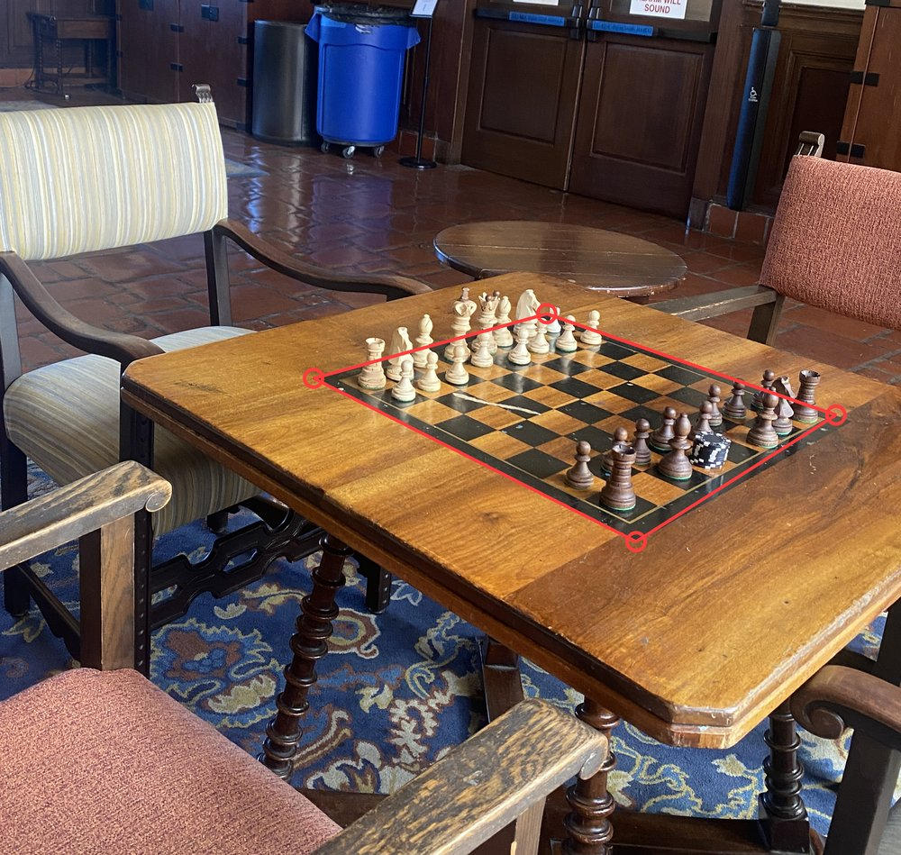
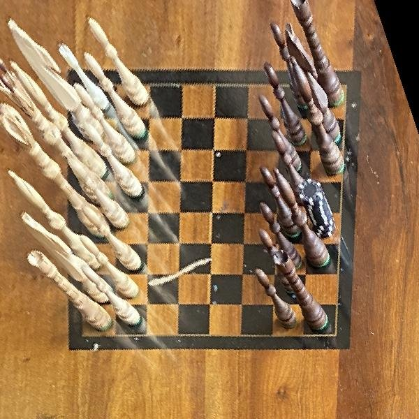
Double door
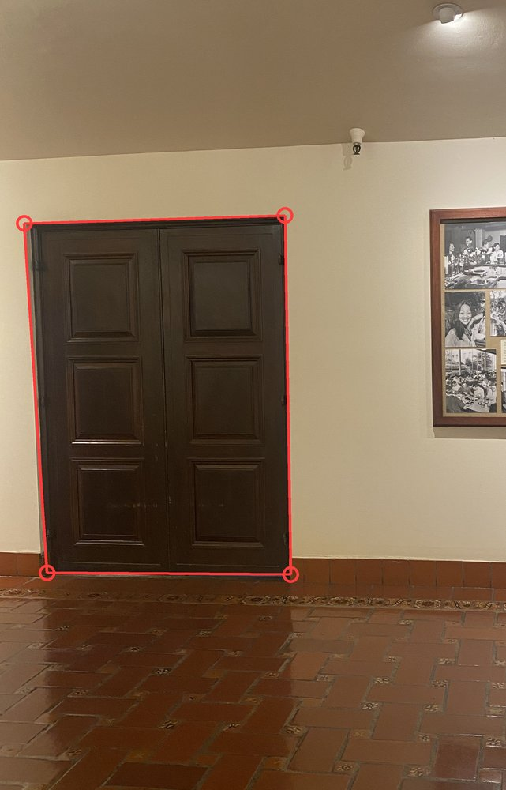
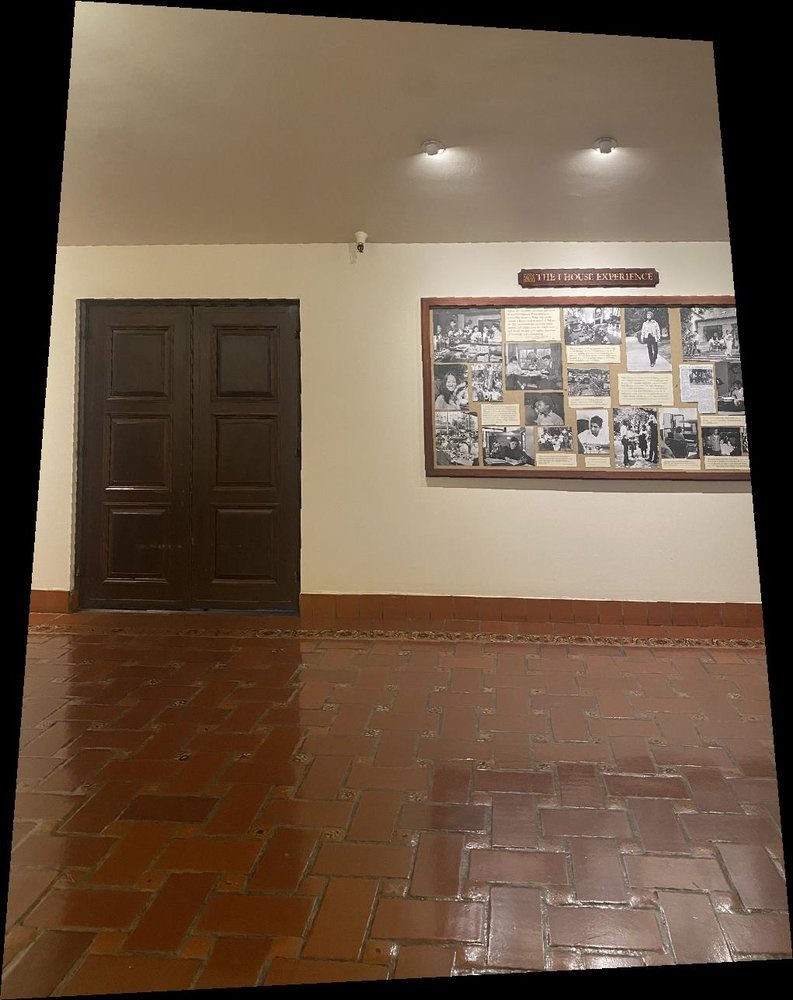
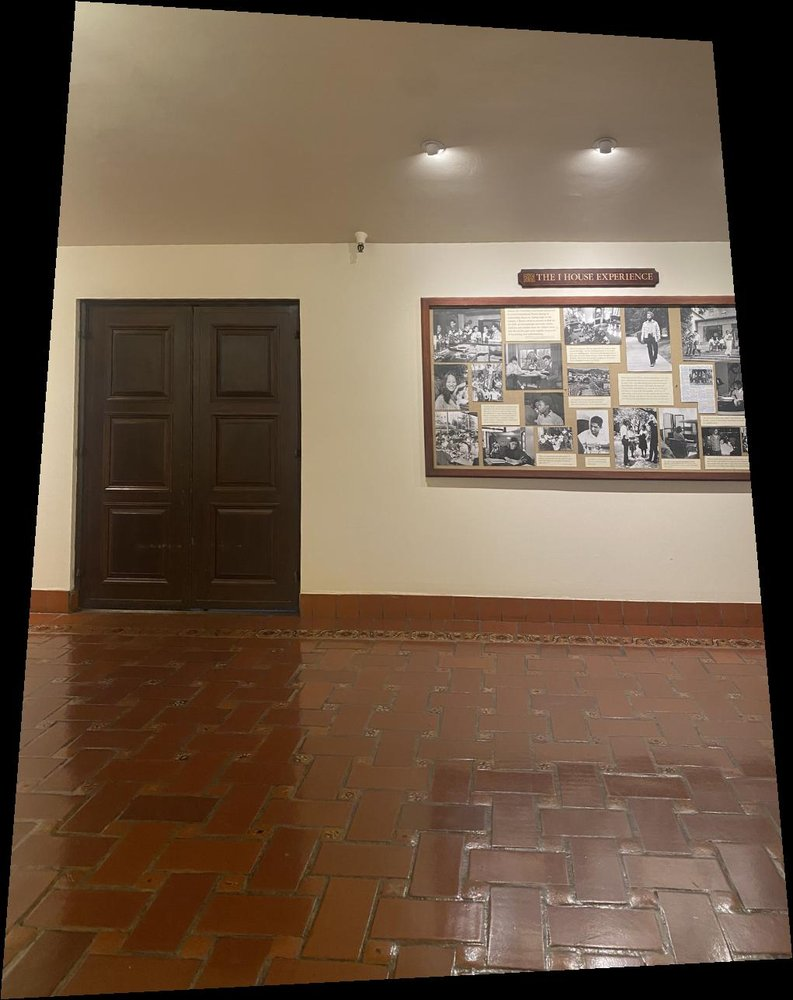
Comparison
The difference between nearest-neighbor and bilinear interpolation is hard to see in the full double-door images, because those photos were taken nearly head-on and from far away, so the warp barely resamples them. The difference is also hard to see in the full chessboard result, but clear once we zoom in: nearest neighbor gives jagged edges along the board's lines, while bilinear gives smooth edges, with slightly softer detail.
Bilinear is about 2× slower (chessboard: 0.023 s vs. 0.045 s; double door: 0.082 s vs. 0.155 s), because it reads four pixels per output pixel instead of one.
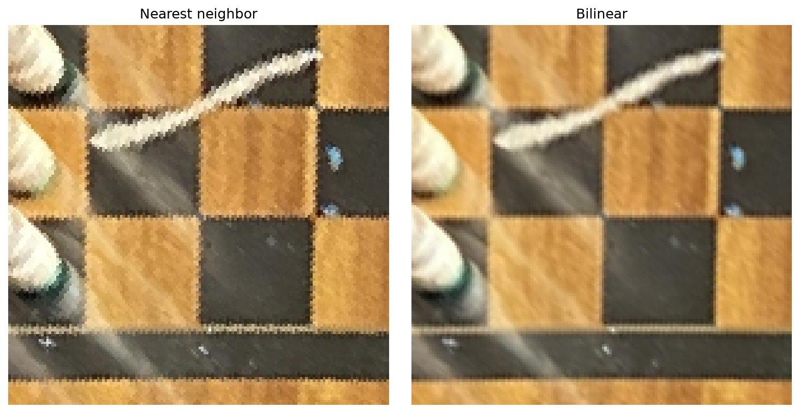
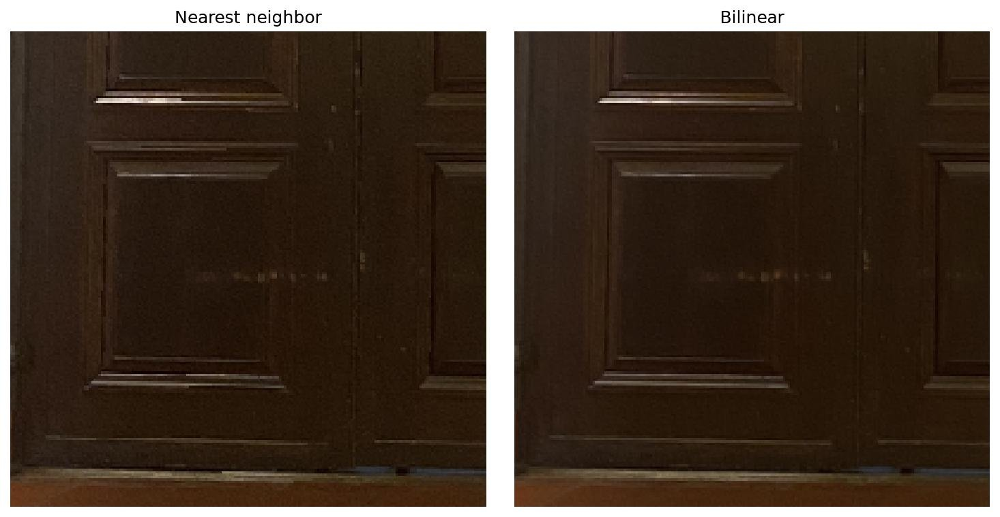
A.4 Blending the Images into a Mosaic
Procedure
- Reference image: for all three sets, I used the middle image as the reference and projected the left and right images into its frame. Picking the middle image splits the distortion evenly between the two sides; using an end image would stretch the far side much more.
- Homographies: I compute homographies between neighboring pairs (left→middle, right→middle) and invert or chain them as needed so that every image maps into the reference frame.
- Canvas: I warp each image's corners into the reference frame and take the bounding box of all of them. Every image is then warped onto this one shared canvas with bilinear interpolation, so they line up pixel for pixel.
- Blending (feathering): each image gets a weight mask that is 1 at its center and falls off linearly to 0 at its edges. I warp this mask along with the image, and each mosaic pixel is the weighted average of all images that cover it.
Implementation: make_alpha_mask, build_mosaic
def make_alpha_mask(h, w):
"""Feathering weights: 1 at the center, falling linearly to ~0 at the edges."""
ramp_y = 1 - np.abs(np.linspace(-1, 1, h))
ramp_x = 1 - np.abs(np.linspace(-1, 1, w))
return np.minimum.outer(ramp_y, ramp_x) + 1e-6
def build_mosaic(images, Hs, warp_fn=None, two_band=False, sigma=5):
"""Warp every image into the reference frame (Hs[i]: image i -> reference) and feather-blend."""
warp_fn = warp_fn or warpImageBilinear
# shared canvas: union of every warped image's bounds
bs = np.array([compute_warp_bounds(im.shape, H) for im, H in zip(images, Hs)])
bounds = (int(bs[:, 0].min()), int(bs[:, 1].min()), int(bs[:, 2].max()), int(bs[:, 3].max()))
# warp each image with its feathering weights as a 4th channel
rgbs, wgts, alphas = [], [], []
for im, H in zip(images, Hs):
stacked = np.dstack([im, make_alpha_mask(*im.shape[:2])])
warped, alpha = warp_fn(stacked, H, bounds)
rgbs.append(warped[..., :3])
wgts.append(warped[..., 3:])
alphas.append(alpha[..., None])
def feather(layers):
num = sum(w * x for w, x in zip(wgts, layers))
return num / np.maximum(sum(wgts), 1e-8)
if not two_band:
return feather(rgbs)
# two-band: feather the low frequencies, take high frequencies from the strongest image
blur = lambda x: gaussian_filter(x, sigma=(sigma, sigma, 0))
lows = [blur(rgb * a) / np.maximum(blur(a), 1e-8) * a for rgb, a in zip(rgbs, alphas)]
highs = [rgb - low for rgb, low in zip(rgbs, lows)]
k = np.stack(wgts).argmax(axis=0)
high = np.take_along_axis(np.stack(highs), k[None], axis=0)[0]
return np.clip(feather(lows) + high, 0, 1)Implementation: chaining homographies to the reference image
def homographies_to_ref(name):
"""Chain the adjacent-pair homographies so Hs[i] maps image i into the reference frame."""
n, ref = len(mosaic_images[name]), MOSAICS[name]['ref']
Hs = [None] * n
Hs[ref] = np.eye(3)
for i in range(ref - 1, -1, -1):
Hs[i] = Hs[i + 1] @ pair_H[(name, i, i + 1)]
for i in range(ref + 1, n):
Hs[i] = Hs[i - 1] @ np.linalg.inv(pair_H[(name, i - 1, i)])
return [H / H[2, 2] for H in Hs]Wall
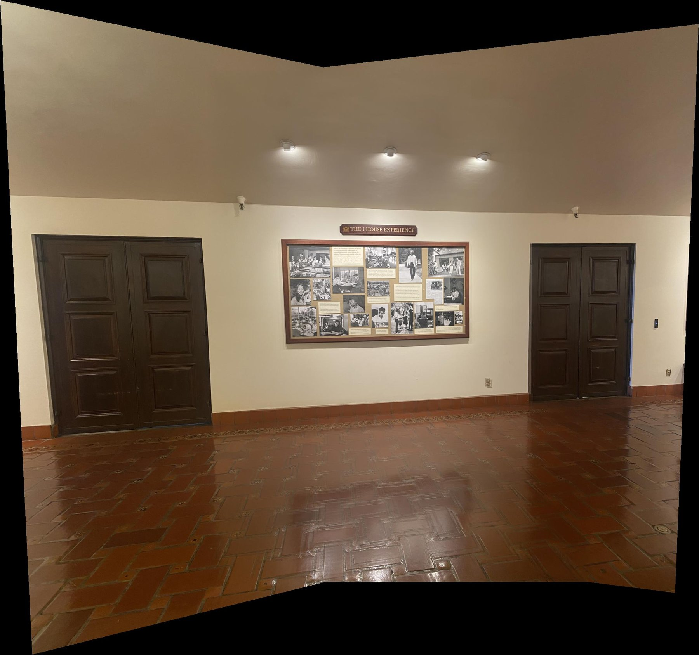
Mosaic 1 (wall): The doors, display board and floor tiles line up across well, but the reflections on the glossy floor are imperfect.
Door
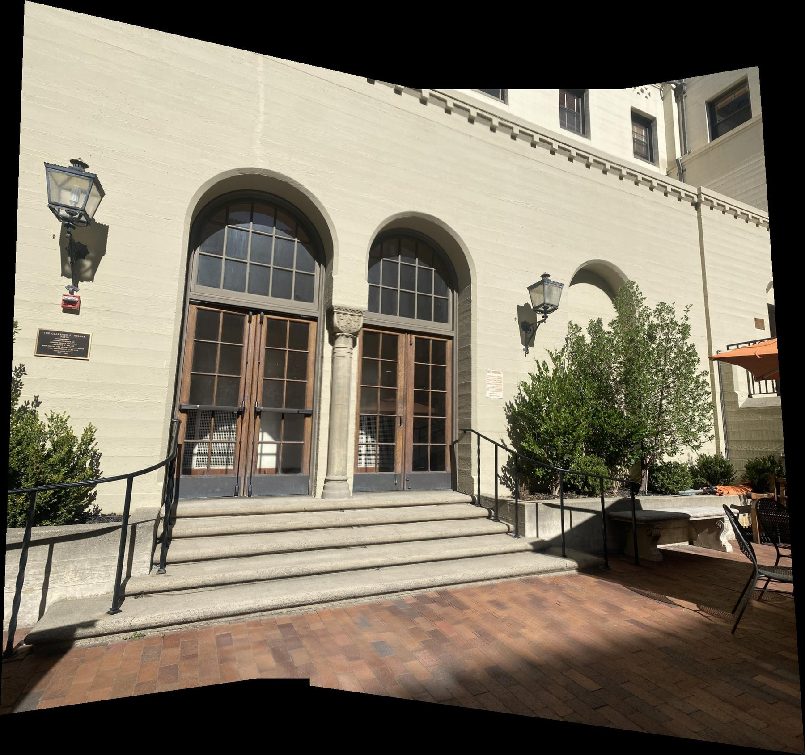
Mosaic 2 (door): Everything is continuous across seams, even the leaves, which is quite remarkable.
Chimney
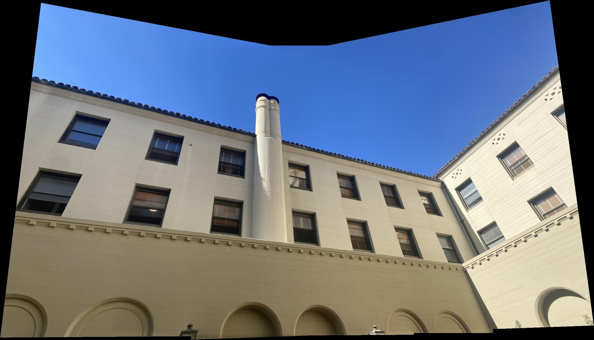
Mosaic 3 (chimney): The windows, the roofline and the chimney still line up across the seams, and the sky's gradient blends well.
Acknowledgements
This project was super fun! I'd like to thank Claude for assistance with skeleton functions, helper functions, conceptual help, general formatting, and polishing my writing.